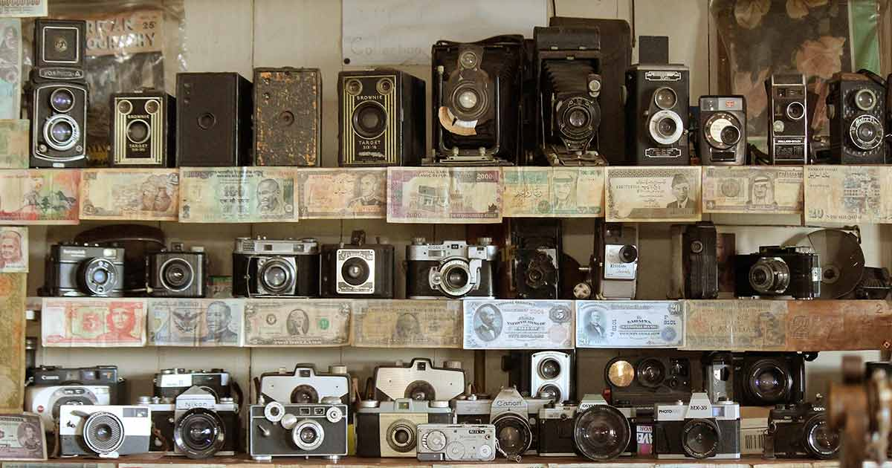
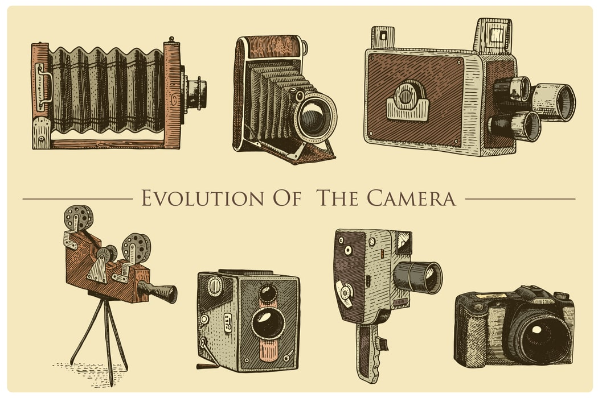

Με τον όρο φωτογραφία αναφερόμαστε στην τέχνη και επιστήμη της δημιουργίας οπτικών εικόνων μέσω της
αποτύπωσης του φωτός, με χρήση κατάλληλων συσκευών (φωτογραφικές μηχανές).
Ετυμολογικά, η λέξη φωτογραφία είναι σύνθετη και προέρχεται από τις ελληνικές λέξεις -φως και -γραφή.
Η φωτογραφία, πέρα από την τεχνολογική της διάσταση, αναγνωρίζεται ως ένα από τα ευρύτερα διαδεδομένα μέσα επικοινωνίας του 20ού αιώνα καθώς και ως μία μορφή τέχνης συγγενική με τη ζωγραφική.
Τα πρώτα πειράματα πάνω σε φωτοευαίσθητα υλικά χρονολογούνται περίπου στις αρχές του 18ου αιώνα και ανήκουν στον Γιόχαν Χάινριχ Σούλτσε (Johann Heinrich Schulze), ο οποίος είχε πετύχει την αποτύπωση του φωτός πάνω σε ένα φωτοευαισθητοποιημένο από άλατα αργύρου χαρτί, αλλά στάθηκε αδύνατη η στερέωση της εικόνας.
Η τεχνική της φωτογραφίας χρώματος εξερευνήθηκε σε ολόκληρη τη διάρκεια του 19ου αιώνα. Τα αρχικά πειράματα αποτύγχαναν να αποτρέψουν το χρώμα από την εξασθένιση. Η πρώτη φωτογραφία χρώματος αποτέλεσε γεγονός το 1861, χάρη στο φυσικό James Clerk Maxwell.
Η ψηφιακή φωτογραφία αποτελεί ίσως την τελευταία σημαντική εξέλιξη σε ό,τι αφορά την τεχνική της φωτογραφίας. Στην ψηφιακή φωτογραφία, αντί για το κοινό "χημικό" φιλμ, χρησιμοποιούνται φωτοευαίσθητοι αισθητήρες. Το μέρος της φωτογραφικής μηχανής που βοηθά την εστίαση της εικόνας είναι το ίδιο. Βέβαια, συνοδεύεται πια από πολλά βοηθητικά ηλεκτρονικά μέσα.
 
Η πρώτη εμπορική ψηφιακή φωτογραφική μηχανή παρουσιάστηκε το 1990.
Σήμερα, οι ψηφιακές μηχανές αποτελούν ευρύτατα διαδεδομένα καταναλωτικά προϊόντα, ενώ συνεχίζουν να
εξελίσσονται ενσωματώνοντας επιπλέον δυνατότητες, καθώς και βιντεοσκόπηση, με ή χωρίς καταγραφή ήχου.